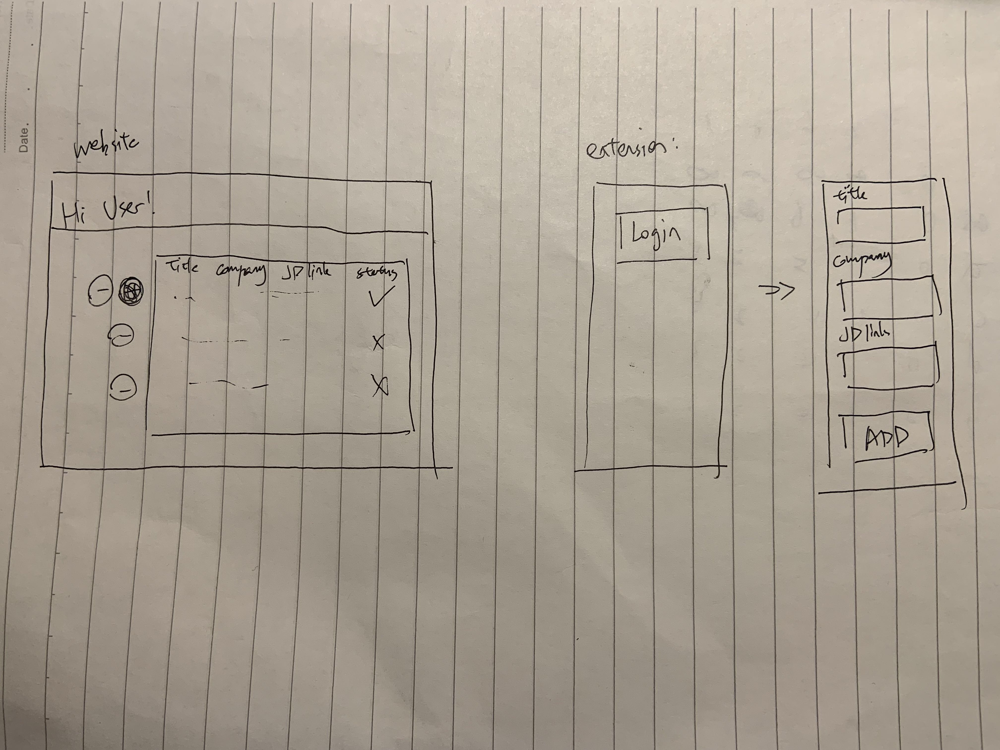

Description
I would like to build a job search website based on MP1 extension.
Interface

Prototype Version
The website should contains information that can let user knows what jobs the user has been marked and what are the status of these job application. Users can manually change the status, add, or delete jobs they are looking for. Also, login system is needed to record each user's information and their own job list.
Final Version
The UI of the website should be user friendly and consistent with the extension. The extension should also recognize the current user and perform add-job functionality.
Development Process
- Set up the basic UI to display job lists.
- Implement user login/signup feature and show their own job lists if logged in.
- Polish the website with more fascinating UI.
- Implement login feature in job extension; also make the jobs added from job extension link back to the website.
Things to explore
- I think I might need to explore firebase for data storage. I may also need to explore mysql database if firebase doesn't meet the requirement.
- This is a multi-page project (login, job list display). Therefore, I am thinking to try React for frontend.
Stretch Goals
- Job title and company can be web-scraped from job description link, instead of manually typing in.